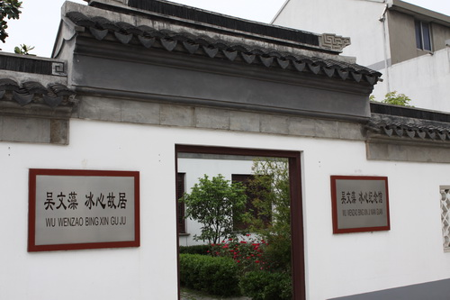

吴文藻、冰心纪念馆

吴文藻与冰心塑像
资料陈列馆
位于江苏省江阴市夏港街道。吴文藻与冰心是中国现代史上杰出的文化名人，恩爱伉俪。他俩一位是享誉学界的巨子，以他毕生执着而深情的学识建构了中国化社会学体系；一位是蜚声文坛的才女，以她优美而温馨的《寄小读者》滋养了几代小读者的心灵。在近一个世纪的漫长岁月里，他们携手扶掖，互慰互勉，相濡以沫。无论是明净的岁月，抑或是荆棘遍地，他们生死相依，两颗心充分地享受着宁静柔畅的琴瑟和鸣之音，彼此守望着忠贞而精诚的爱情。
文化是人类的底气，也是社会的灵魂。为纪念和研究吴文藻、冰心先生，当地政府对吴文藻、冰心故居拨专款进行保护性修缮布馆，设立吴文藻、冰心纪念馆，并分8个部分展示了吴文藻、冰心先生的一生，以表彰先贤，启示后人。